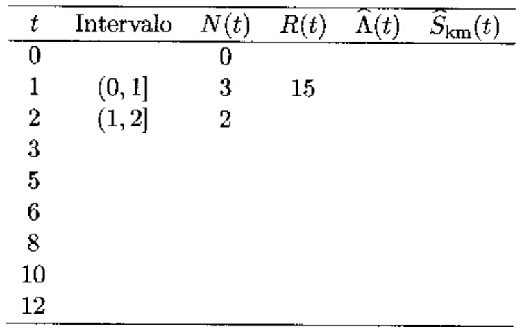
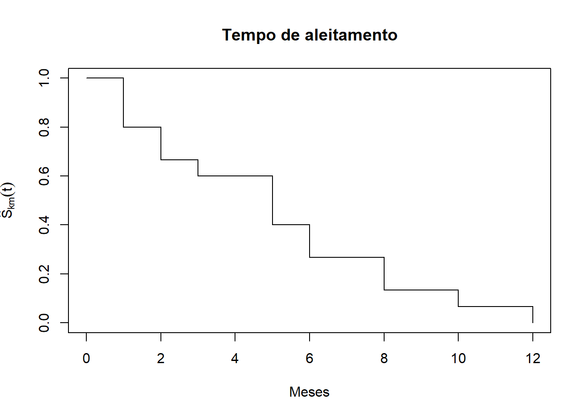
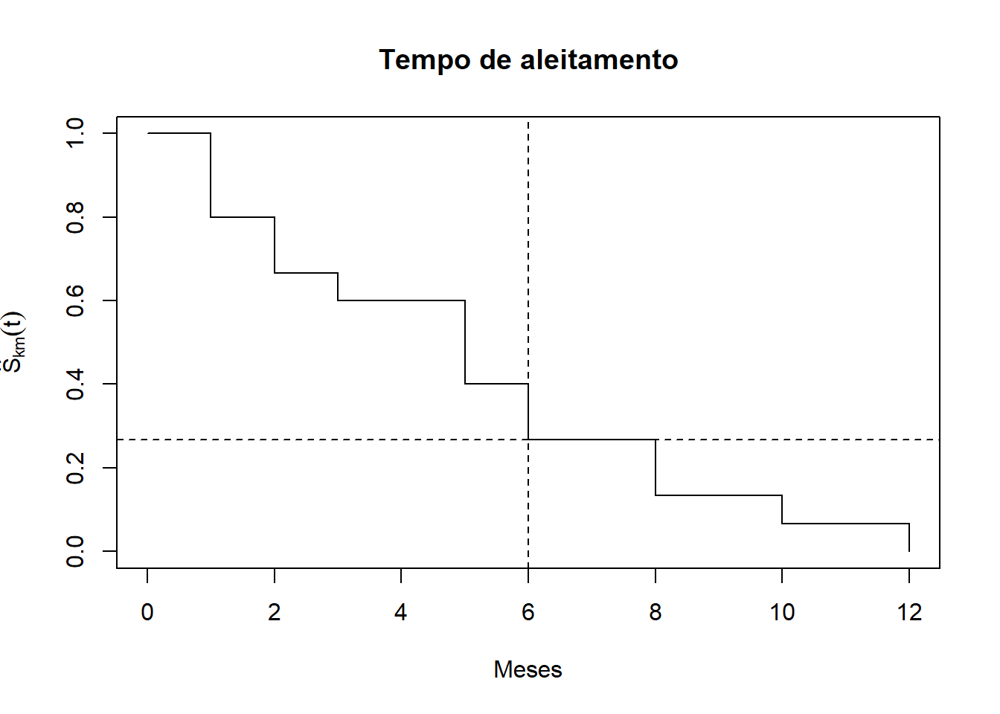
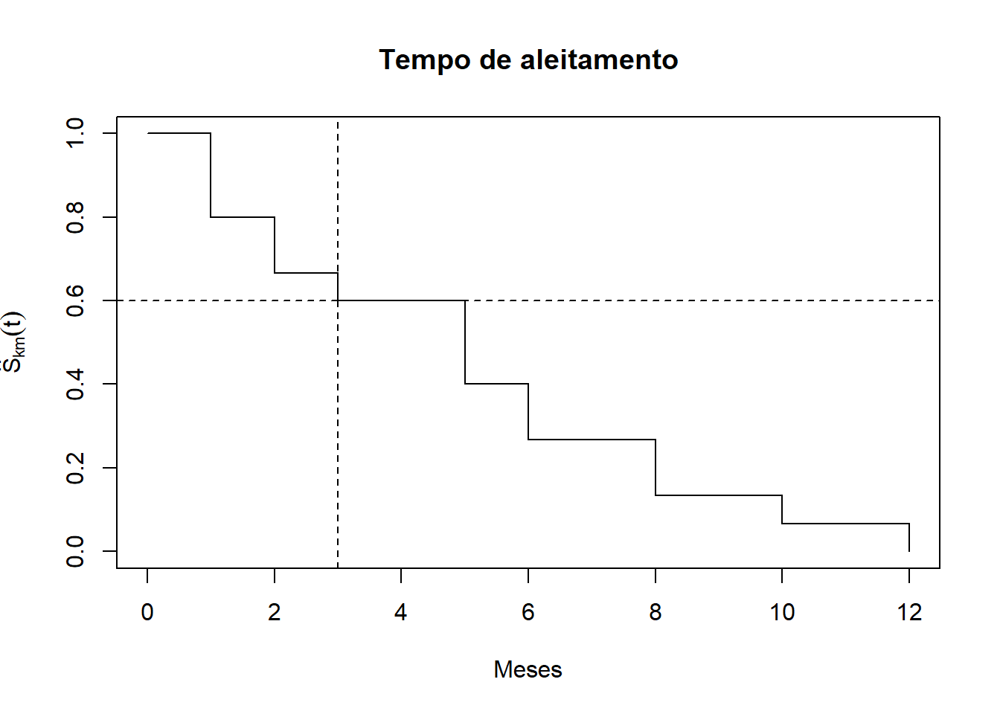
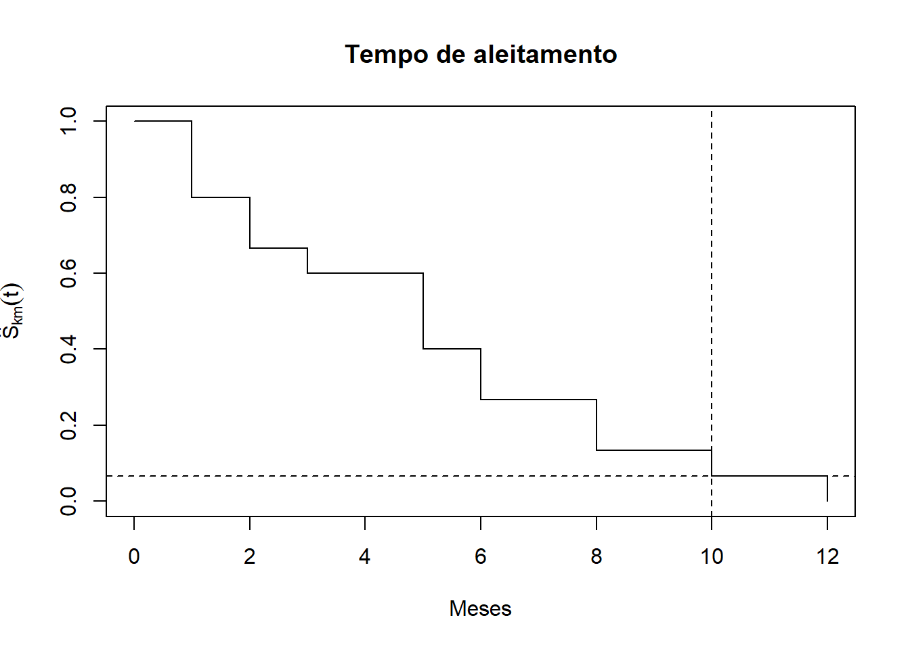
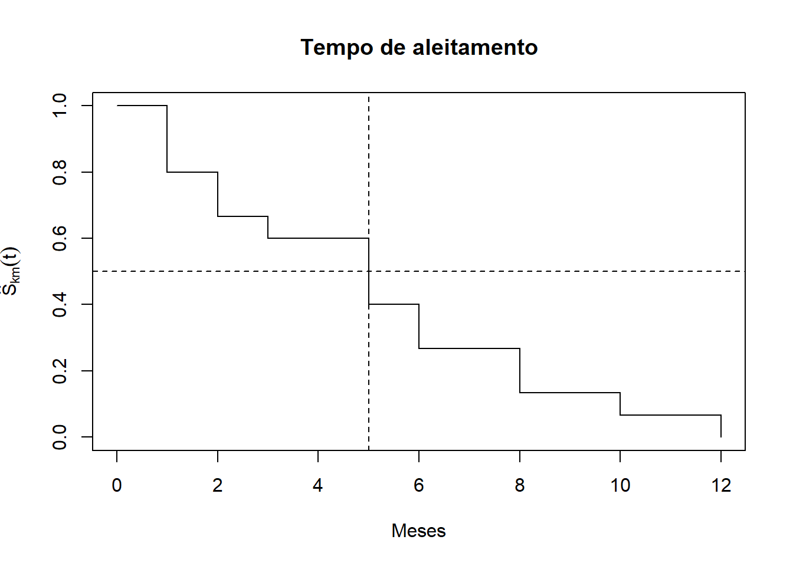
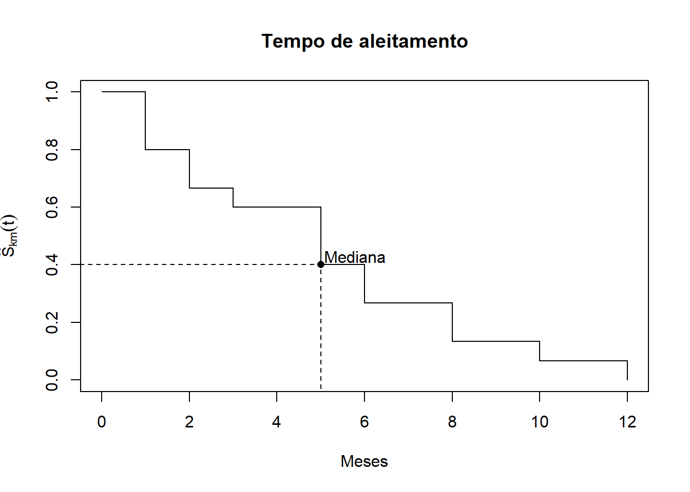
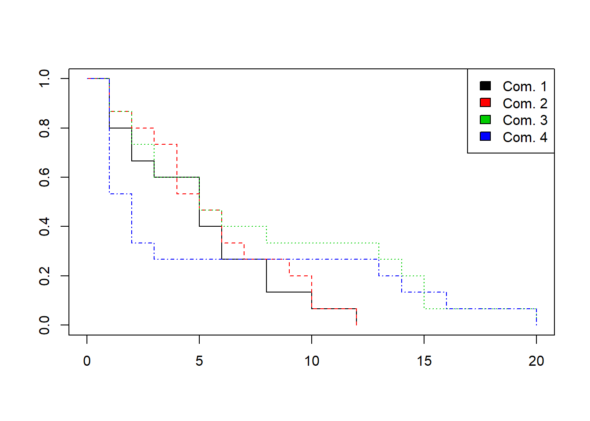
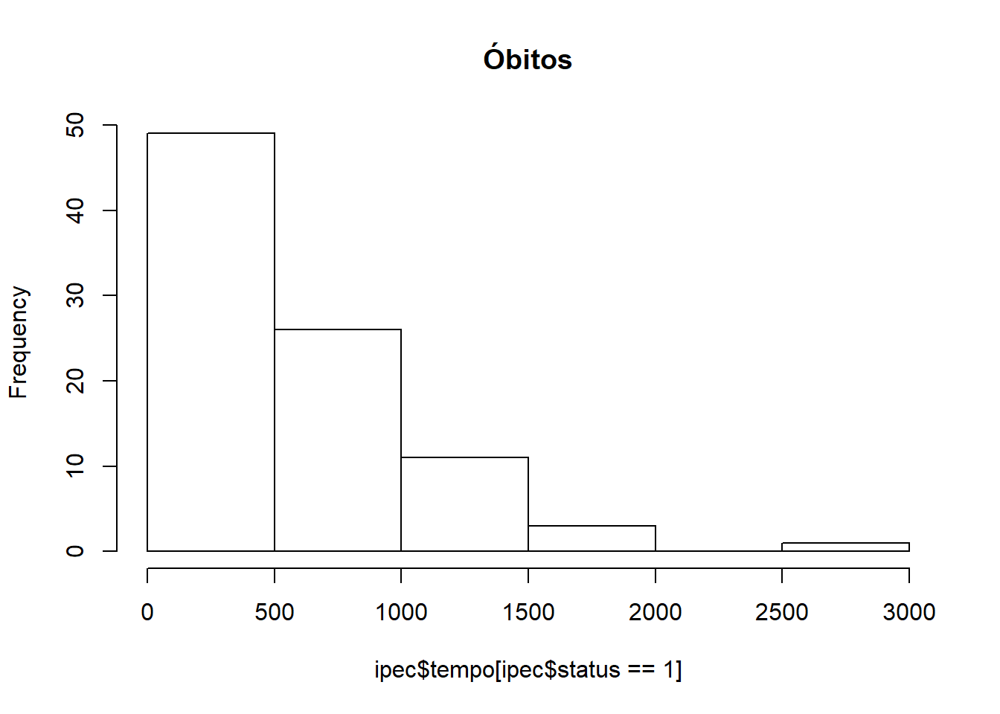
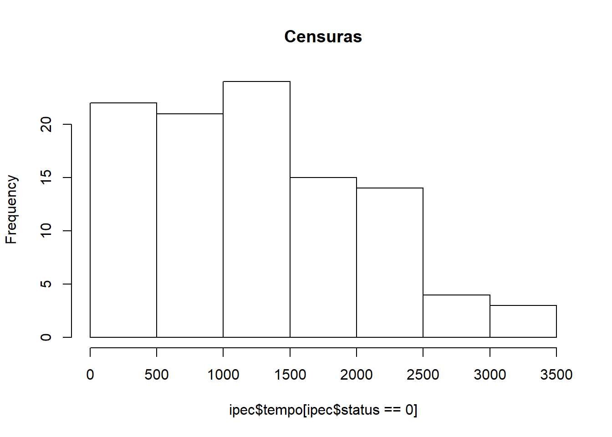

Considere os dados de tempo de aleitamento de 15 crianças, descrito no exercício 2.1.
6 12 10 3 5 1 6 8 1 5 2 2 5 8 1
x = c(6L, 12L, 10L, 3L, 5L, 1L, 6L, 8L, 1L, 5L, 2L, 2L, 5L, 8L, 1L)
t = sort(unique(x))
inter = lead(cut(c(0,t), breaks = c(0,t)))[1:length(t)]
Nt = as.numeric(table(x))
Rt = rev(cumsum(rev(Nt)))
Skm = cumprod((Rt - Nt)/Rt)
Lambda = -log(Skm)
aleit <- data.frame(t, inter, Nt, Rt, Lambda, Skm)
names <- c("$t$", "Intervalo", "$N(t)$", "$R(t)$",
"$\\hat{\\Lambda}(t)$", "$\\hat{S}_{km}(t)$")
knitr::kable(aleit, digits = 4, col.names = names)| \(t\) | Intervalo | \(N(t)\) | \(R(t)\) | \(\hat{\Lambda}(t)\) | \(\hat{S}_{km}(t)\) |
|---|---|---|---|---|---|
| 1 | (0,1] | 3 | 15 | 0.2231 | 0.8000 |
| 2 | (1,2] | 2 | 12 | 0.4055 | 0.6667 |
| 3 | (2,3] | 1 | 10 | 0.5108 | 0.6000 |
| 5 | (3,5] | 3 | 9 | 0.9163 | 0.4000 |
| 6 | (5,6] | 2 | 6 | 1.3218 | 0.2667 |
| 8 | (6,8] | 2 | 4 | 2.0149 | 0.1333 |
| 10 | (8,10] | 1 | 2 | 2.7081 | 0.0667 |
| 12 | (10,12] | 1 | 1 | Inf | 0.0000 |
y <- Surv(x, rep(1, length(x)))
y_fit <- survfit(y ~ 1)
plot(
y_fit,
conf.int = F,
main = "Tempo de aleitamento",
xlab = "Meses",
ylab = expression(hat(S)[km](t))
)
plot(
y_fit,
conf.int = F,
main = "Tempo de aleitamento",
xlab = "Meses",
ylab = expression(hat(S)[km](t))
)
abline(h = 0.2667, v = 6, lty = 2)
A probabilidade é de \(S(6) = 0,2667\).
plot(
y_fit,
conf.int = F,
main = "Tempo de aleitamento",
xlab = "Meses",
ylab = expression(hat(S)[km](t))
)
abline(h = 0.6, v = 3, lty = 2)
A probabilidade é de \(S(3) = 0,6\).
plot(
y_fit,
conf.int = F,
main = "Tempo de aleitamento",
xlab = "Meses",
ylab = expression(hat(S)[km](t))
)
abline(h = 0.0667, v = 10, lty = 2)
A probabilidade é de \(S(10) = 0,0667\).
O tempo mediano de aleitamento é dado pela valor de \(S(t)\le 0,5\).
plot(
y_fit,
conf.int = F,
main = "Tempo de aleitamento",
xlab = "Meses",
ylab = expression(hat(S)[km](t))
)
abline(h = 0.5, v = 5, lty = 2)
No caso, o valor mais próximo que satisfaz esta condição é \(t = 5\), para o qual o valor de \(S(t)\) é \(0,4\). Ou seja: \[\hat{S}_{km}(5) = 0,4\]
Ainda com os dados do aleitamento construa a tabela de risco usando os estimadores Kaplan Meier e Nelson-Aalen.
t = sort(unique(x))
inter = lead(cut(c(0,t), breaks = c(0,t)))[1:length(t)]
Nt = as.numeric(table(x))
Rt = rev(cumsum(rev(Nt)))
Skm = cumprod((Rt - Nt)/Rt)
Lkm = -log(Skm)
Lna = cumsum(Nt/Rt)
aleit_na <- data.frame(t, inter, Nt, Rt, Lkm, Lna)
names <- c("$t$", "Intervalo", "$N(t)$", "$R(t)$",
"$\\hat{\\Lambda}_{km}(t)$", "$\\hat{\\Lambda}_{na}(t)$")
knitr::kable(aleit_na, digits = 4, col.names = names)| \(t\) | Intervalo | \(N(t)\) | \(R(t)\) | \(\hat{\Lambda}_{km}(t)\) | \(\hat{\Lambda}_{na}(t)\) |
|---|---|---|---|---|---|
| 1 | (0,1] | 3 | 15 | 0.2231 | 0.2000 |
| 2 | (1,2] | 2 | 12 | 0.4055 | 0.3667 |
| 3 | (2,3] | 1 | 10 | 0.5108 | 0.4667 |
| 5 | (3,5] | 3 | 9 | 0.9163 | 0.8000 |
| 6 | (5,6] | 2 | 6 | 1.3218 | 1.1333 |
| 8 | (6,8] | 2 | 4 | 2.0149 | 1.6333 |
| 10 | (8,10] | 1 | 2 | 2.7081 | 2.1333 |
| 12 | (10,12] | 1 | 1 | Inf | 3.1333 |
Os dados completos de tempo de aleitamento (estudo fictício) estão presentes no arquivo leite.txt, Apêndice 12.4. Abra este banco de dados no R e:
## Call: survfit(formula = Surv(x) ~ 1)
##
## time n.risk n.event survival std.err lower 95% CI upper 95% CI
## 1 15 3 0.8000 0.1033 0.6212 1.000
## 2 12 2 0.6667 0.1217 0.4661 0.953
## 3 10 1 0.6000 0.1265 0.3969 0.907
## 5 9 3 0.4000 0.1265 0.2152 0.743
## 6 6 2 0.2667 0.1142 0.1152 0.617
## 8 4 2 0.1333 0.0878 0.0367 0.484
## 10 2 1 0.0667 0.0644 0.0100 0.443
## 12 1 1 0.0000 NaN NA NAplot(
aleit_fit,
conf.int = F,
main = "Tempo de aleitamento",
xlab = "Meses",
ylab = expression(hat(S)[km](t))
)
lines(list(x = c(-0.5, 5, 5),
y = c(0.4, 0.4, -0.5)),
lty = 2)
points(5, 0.4, pch = 16)
text(5, 0.4, "Mediana", adj = c(-0.05, -0.2))
coxph().## Call: survfit(formula = coxph(Surv(x) ~ 1))
##
## n events median 0.95LCL 0.95UCL
## 15 15 5 2 10## Call: survfit(formula = coxph(Surv(x) ~ 1))
##
## time n.risk n.event survival std.err lower 95% CI upper 95% CI
## 1 15 3 0.8065 0.1003 0.63208 1.000
## 2 12 2 0.6776 0.1187 0.48070 0.955
## 3 10 1 0.6131 0.1236 0.41291 0.910
## 5 9 3 0.4197 0.1252 0.23384 0.753
## 6 6 2 0.2909 0.1152 0.13384 0.632
## 8 4 2 0.1623 0.0933 0.05261 0.501
## 10 2 1 0.0984 0.0750 0.02212 0.438
## 12 1 1 0.0362 0.0455 0.00308 0.426Em que situação se deve dar preferência as estimativas de Nelson-Aalen?
Suponha que os tempos de aleitamento de 60 bebês estejam agrupados em quatro comunidades diferentes:
Comunidade 1: 6 12 10 3 5 1 6 8 1 5 2 2 5 8 1
Comunidade 2: 5 12 10 4 4 3 6 9 2 6 4 1 7 10 1
Comunidade 3: 13 14 20 3 5 1 8 15 2 5 3 2 6 15 1
Comunidade 4: 1 16 20 1 1 1 1 2 2 13 3 1 1 14 2leite2 <- data.frame(id = 1:60,
tempo = c(6L, 12L, 10L, 3L, 5L, 1L, 6L, 8L, 1L, 5L, 2L, 2L,
5L, 8L, 1L, 5L, 12L, 10L, 4L, 4L, 3L, 6L, 9L, 2L,
6L, 4L, 1L, 7L, 10L, 1L, 13L, 14L, 20L, 3L, 5L, 1L,
8L, 15L, 2L, 5L, 3L, 2L, 6L, 15L, 1L, 1L, 16L, 20L,
1L, 1L, 1L, 1L, 2L, 2L, 13L, 3L, 1L, 1L, 14L, 2L),
status = 1,
grupo = rep(1:4, each = 15))
leite2## id tempo status grupo
## 1 1 6 1 1
## 2 2 12 1 1
## 3 3 10 1 1
## 4 4 3 1 1
## 5 5 5 1 1
## 6 6 1 1 1
## 7 7 6 1 1
## 8 8 8 1 1
## 9 9 1 1 1
## 10 10 5 1 1
## 11 11 2 1 1
## 12 12 2 1 1
## 13 13 5 1 1
## 14 14 8 1 1
## 15 15 1 1 1
## 16 16 5 1 2
## 17 17 12 1 2
## 18 18 10 1 2
## 19 19 4 1 2
## 20 20 4 1 2
## 21 21 3 1 2
## 22 22 6 1 2
## 23 23 9 1 2
## 24 24 2 1 2
## 25 25 6 1 2
## 26 26 4 1 2
## 27 27 1 1 2
## 28 28 7 1 2
## 29 29 10 1 2
## 30 30 1 1 2
## 31 31 13 1 3
## 32 32 14 1 3
## 33 33 20 1 3
## 34 34 3 1 3
## 35 35 5 1 3
## 36 36 1 1 3
## 37 37 8 1 3
## 38 38 15 1 3
## 39 39 2 1 3
## 40 40 5 1 3
## 41 41 3 1 3
## 42 42 2 1 3
## 43 43 6 1 3
## 44 44 15 1 3
## 45 45 1 1 3
## 46 46 1 1 4
## 47 47 16 1 4
## 48 48 20 1 4
## 49 49 1 1 4
## 50 50 1 1 4
## 51 51 1 1 4
## 52 52 1 1 4
## 53 53 2 1 4
## 54 54 2 1 4
## 55 55 13 1 4
## 56 56 3 1 4
## 57 57 1 1 4
## 58 58 1 1 4
## 59 59 14 1 4
## 60 60 2 1 4## Call: survfit(formula = Surv(tempo, status) ~ grupo, data = leite2)
##
## n events median 0.95LCL 0.95UCL
## grupo=1 15 15 5 2 8
## grupo=2 15 15 5 4 10
## grupo=3 15 15 5 3 15
## grupo=4 15 15 2 1 14O tempo mediano de sobrevivência estimado é similar nos primeiros 3 grupos, porém, é bastante inferior no grupo 4.
plot(survfit(Surv(tempo, status) ~ grupo, data = leite2),
col = 1:4, lty = 1:4)
legend("topright", c("Com. 1", "Com. 2", "Com. 3", "Com. 4"), fill = 1:4)
grupo. Analise as funções de sobrevivência das quatro comunidades. A que conclusões você chega com esta análise? Existe diferença entre as comunidades quanto ao tempo de aleitamento?## Call:
## survdiff(formula = Surv(tempo, status) ~ grupo, data = leite2)
##
## N Observed Expected (O-E)^2/E (O-E)^2/V
## grupo=1 15 15 12.4 0.5489 0.8735
## grupo=2 15 15 13.4 0.1862 0.3028
## grupo=3 15 15 19.7 1.1220 2.1534
## grupo=4 15 15 14.5 0.0182 0.0323
##
## Chisq= 2.5 on 3 degrees of freedom, p= 0.5## Call:
## survdiff(formula = Surv(tempo, status) ~ grupo, data = leite2,
## rho = 1)
##
## N Observed Expected (O-E)^2/E (O-E)^2/V
## grupo=1 15 8.48 8.22 0.00865 0.0187
## grupo=2 15 7.57 8.70 0.14764 0.3287
## grupo=3 15 6.97 9.43 0.64499 1.5446
## grupo=4 15 10.28 6.95 1.59872 3.3897
##
## Chisq= 4.1 on 3 degrees of freedom, p= 0.3Em ambos os casos observamos diferenças entre os valores observados e esperados nos grupos, porém, os p-valores são muito altos (0.5 e 0.3), o que sugere que os resultados podem ser resultado de variações amostrais e não necessariamente de diferenças entre as comunidades. Então, as diferenças entre os grupos não são estatisticamente significativas.
O banco de dados ipec.csv contém os dados de uma coorte de pacientes com Aids atendidos no Ipec e descritos no apêndice 12.4. Para este estudo foi definido, como tempo de sobrevivência, o tempo entre o diagnóstico de Aids (critério CDC-1993) e o óbito.
# Leitura-limpeza do banco ipec.csv
ipec <- read.csv2("ipec.csv")
ipec$anotrat[ipec$anotrat == 9] <- NA
ipec$obito[ipec$obito == "I"] <- NA
ipec$escola <- factor(
ipec$escola,
labels = c("sem", "fundam", "medio", "sup")
)
ipec$risco <- factor(
ipec$risco,
labels = c("Homo", "UDI", "Transf", "Cont hetero", "Mut parc", "2 fat")
)
ipec$acompan <- factor(
ipec$acompan,
labels = c("Amb", "Int.Post", "Int.Imed")
)
ipec$anotrat <- factor(ipec$anotrat)
ipec$tratam <- factor(
ipec$tratam,
labels = c("Nenhum", "Mono", "Combinada", "Potente")
)
ipec$doenca <- factor(
ipec$doenca,
labels = c("PCP", "TB pulm", "TB diss", "Toxo", "SK",
"Outra", "Cand", "Herpes", "Duas", "Def CD4")
)
ipec$propcp <- factor(
ipec$propcp,
labels = c("Sem", "Prim", "Secund", "Ambas"))## [1] 36.55## [1] 2.939## [1] 149## [1] "103 foram censurados."## [1] "90 foram a óbito."

# Os óbitos concentraram-se principalmente no início do período, enquanto as censuras se distribuíram mais ao longo do período de estudo.
# Tempo de sobrevivência mediano
km <- survfit(Surv(tempo, status) ~ 1, data = ipec)
km$surv[km$surv <= 0.5][1]## [1] 0.4955## Call: survfit(formula = Surv(tempo, status) ~ sexo, data = ipec)
##
## n events median 0.95LCL 0.95UCL
## sexo=F 49 16 NA 1371 NA
## sexo=M 144 74 1116 887 1563Existe uma diferença bastante expressiva entre homens e mulheres considerando que o tempo mediano de sobrevivência dos homens é de 1116 dias enquanto as mulheres sequer chegaram a esse patamar de sobrevivência, sendo que o menor valor da função de sobrevivência foi \(S(t) = 0.521\).
## Call: survfit(formula = Surv(tempo, status) ~ sexo, data = ipec)
##
## sexo=F
## time n.risk n.event survival std.err lower 95% CI upper 95% CI
## 22 49 1 0.980 0.0202 0.941 1.000
## 116 47 1 0.959 0.0286 0.904 1.000
## 134 46 1 0.938 0.0347 0.872 1.000
## 145 45 1 0.917 0.0397 0.842 0.998
## 151 44 1 0.896 0.0439 0.814 0.987
## 163 43 1 0.875 0.0476 0.787 0.974
## 173 42 1 0.855 0.0508 0.760 0.960
## 235 40 1 0.833 0.0539 0.734 0.946
## 333 38 1 0.811 0.0567 0.707 0.930
## 418 36 1 0.789 0.0595 0.680 0.914
## 721 30 1 0.762 0.0630 0.648 0.897
## 854 28 1 0.735 0.0664 0.616 0.878
## 905 24 1 0.705 0.0703 0.579 0.857
## 944 23 1 0.674 0.0737 0.544 0.835
## 1371 14 1 0.626 0.0826 0.483 0.811
## 1983 6 1 0.521 0.1175 0.335 0.811
##
## sexo=M
## time n.risk n.event survival std.err lower 95% CI upper 95% CI
## 16 144 1 0.993 0.00692 0.980 1.000
## 18 143 1 0.986 0.00975 0.967 1.000
## 21 142 1 0.979 0.01190 0.956 1.000
## 29 139 1 0.972 0.01374 0.946 0.999
## 35 138 1 0.965 0.01534 0.935 0.996
## 37 137 1 0.958 0.01677 0.926 0.991
## 39 136 1 0.951 0.01807 0.916 0.987
## 40 135 1 0.944 0.01926 0.907 0.982
## 52 133 1 0.937 0.02038 0.898 0.978
## 54 132 1 0.930 0.02142 0.889 0.973
## 60 131 1 0.923 0.02241 0.880 0.968
## 80 130 1 0.916 0.02333 0.871 0.962
## 83 128 1 0.908 0.02422 0.862 0.957
## 84 127 1 0.901 0.02506 0.853 0.952
## 108 125 1 0.894 0.02588 0.845 0.946
## 123 124 1 0.887 0.02666 0.836 0.941
## 150 122 1 0.880 0.02741 0.827 0.935
## 151 121 1 0.872 0.02813 0.819 0.929
## 152 120 1 0.865 0.02882 0.810 0.923
## 158 119 1 0.858 0.02948 0.802 0.918
## 179 117 1 0.850 0.03013 0.793 0.912
## 183 116 1 0.843 0.03075 0.785 0.906
## 194 115 1 0.836 0.03134 0.777 0.899
## 204 113 1 0.828 0.03192 0.768 0.893
## 214 112 1 0.821 0.03248 0.760 0.887
## 254 110 1 0.814 0.03304 0.751 0.881
## 259 109 1 0.806 0.03356 0.743 0.875
## 285 108 1 0.799 0.03407 0.735 0.868
## 290 107 1 0.791 0.03456 0.726 0.862
## 304 105 1 0.784 0.03505 0.718 0.855
## 310 104 1 0.776 0.03551 0.709 0.849
## 323 103 1 0.769 0.03595 0.701 0.842
## 340 101 1 0.761 0.03639 0.693 0.836
## 371 98 1 0.753 0.03684 0.684 0.829
## 397 95 1 0.745 0.03730 0.676 0.822
## 408 94 1 0.737 0.03773 0.667 0.815
## 419 93 1 0.729 0.03815 0.658 0.808
## 426 92 1 0.721 0.03855 0.650 0.801
## 499 89 1 0.713 0.03896 0.641 0.794
## 516 87 1 0.705 0.03937 0.632 0.787
## 555 86 1 0.697 0.03975 0.623 0.779
## 572 85 1 0.689 0.04012 0.614 0.772
## 618 83 1 0.680 0.04049 0.606 0.765
## 623 82 1 0.672 0.04084 0.597 0.757
## 631 81 1 0.664 0.04117 0.588 0.750
## 644 80 1 0.656 0.04148 0.579 0.742
## 645 79 1 0.647 0.04178 0.570 0.735
## 688 76 1 0.639 0.04209 0.561 0.727
## 733 74 1 0.630 0.04239 0.552 0.719
## 775 73 1 0.621 0.04268 0.543 0.711
## 811 71 1 0.613 0.04297 0.534 0.703
## 850 70 1 0.604 0.04324 0.525 0.695
## 852 69 1 0.595 0.04349 0.516 0.687
## 855 68 1 0.586 0.04372 0.507 0.679
## 887 67 1 0.578 0.04394 0.498 0.671
## 892 66 1 0.569 0.04413 0.489 0.662
## 927 64 1 0.560 0.04433 0.480 0.654
## 952 61 1 0.551 0.04454 0.470 0.645
## 967 59 1 0.542 0.04476 0.461 0.637
## 992 56 1 0.532 0.04499 0.451 0.628
## 998 55 1 0.522 0.04520 0.441 0.619
## 1015 53 1 0.512 0.04541 0.431 0.610
## 1085 50 1 0.502 0.04564 0.420 0.600
## 1116 49 1 0.492 0.04584 0.410 0.590
## 1125 48 1 0.482 0.04602 0.399 0.581
## 1139 47 1 0.471 0.04617 0.389 0.571
## 1145 46 1 0.461 0.04629 0.379 0.561
## 1226 45 1 0.451 0.04638 0.369 0.552
## 1247 43 1 0.440 0.04647 0.358 0.542
## 1261 42 1 0.430 0.04653 0.348 0.531
## 1348 35 1 0.418 0.04680 0.335 0.520
## 1506 31 1 0.404 0.04719 0.321 0.508
## 1563 28 1 0.390 0.04766 0.307 0.495
## 2898 3 1 0.260 0.11072 0.113 0.599O valor da sobrevivência mediana dos homens é de 1116 dias, enquanto para as mulheres, não foi possível calcular este percentil, já que o estudo foi encerrado antes que a função de sobrevivência atingisse 0.5.
O valor do percentil 0.75 para os homens foi de 397 dias, enquanto para as mulheres foi de 854. Já o percentil 0.9 para os homens foi de 108 dias, enquanto as mulheres atingiram este marca em 151 dias.
tratam)?## Call: survfit(formula = Surv(tempo, status) ~ tratam, data = ipec)
##
## n events median 0.95LCL 0.95UCL
## tratam=Nenhum 44 32 173 151 516
## tratam=Mono 100 51 1226 967 NA
## tratam=Combinada 35 6 2898 2898 NA
## tratam=Potente 14 1 NA NA NAHá uma diferença considerável entre as sobrevivências de pacientes de acordo com o tratamento recebido. Os pacientes que não receberam nenhum tratamento têm mediana de 173 dias, enquanto os pacientes tratados com um medicamento têm mediana de 1226 dias, já os que receberam o tratamento combinado têm mediana de 2898 dias. Os que receberam o tratamento “Potente” têm mediana desconhecida, provavelmente devido ao pequeno número de eventos observados (apenas 1).
## Call: survfit(formula = Surv(tempo, status) ~ escola, data = ipec)
##
## 11 observations deleted due to missingness
## n events median 0.95LCL 0.95UCL
## escola=sem 59 26 1371 850 NA
## escola=fundam 44 20 1116 733 NA
## escola=medio 55 27 1563 1085 NA
## escola=sup 24 11 855 644 NASim, existe diferença na sobrevivência segundo escolaridade. Os pacientes com escolaridade média tem maior sobrevivência, enquanto as pessoas com nível superior de escolaridade de menor sobrevivência.